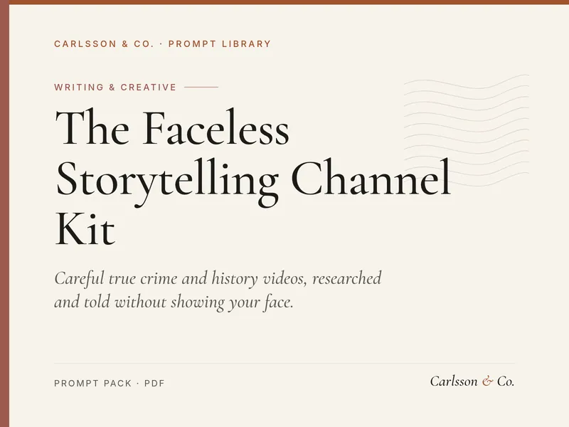
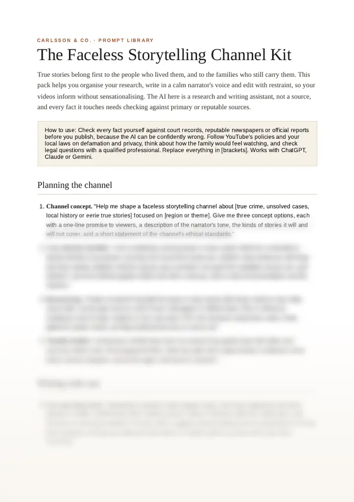

Careful true crime and history videos, researched and told without showing your face.

16 prompts for running a faceless narrated storytelling channel on YouTube: channel concept and tone, careful case selection, research logs and timelines, separating fact from claim, ethical script review, calm narrated scripts, respectful visuals, CapCut edit plans, titles and thumbnails, source credits and a weekly production routine. For creators who want to tell true crime, unsolved, local history and eerie true stories with care for the real people involved.
Look inside
Real pages from the PDF (3 pages, A4). The first part of the opening page is shown as it is; the rest is blurred so the pack stays worth buying.

Page 1 of 3. The rest is blurred here.Page 2, blurred.
What's inside
Every prompt in the PDF, listed by section.
Planning the channel
01Channel concept
02Case selection checklist
03Research log
04Timeline builder
Writing with care
05Fact and claim check
06Script structure
07Calm narrator voice
08Victims as people
Review and visuals
09Ethics review
10Visuals plan
11CapCut edit plan
12Music and pacing
Publishing and routine
13Respectful titles
14Thumbnail brief
15Pinned source comment
16Weekly production system
Sample prompts
Three of the 16, so you can see how specific they are. The PDF has the rest, plus a short introduction.
Planning the channel
Channel concept
Help me shape a faceless storytelling channel about [true crime, unsolved cases, local history or eerie true stories] focused on [region or theme]. Give me three concept options, each with a one-line promise to viewers, a description of the narrator's tone, the kinds of stories it will and will not cover, and a short statement of the channel's ethical standards.
Planning the channel
Case selection checklist
I am considering covering [case or story name]. Build me a checklist to decide whether to go ahead, covering how recent the events are, whether close family are still living and have spoken publicly, whether anyone was convicted, how good the available sources are, and whether I can tell it without graphic detail. End with a clear go, wait or skip recommendation and the reasons.
Planning the channel
Research log
Create a research log table for [case or story name] with these columns: fact, date, source title, source type such as court record, newspaper or official report, link or reference, confidence level of high, medium or low, and notes. Fill in the structure using these notes I have gathered: [paste notes], and flag anything that has no source yet.